Itens
Os 190 itens do jogo.
Todos os itens do jogo, com os valores do código. Toque no nome para ver a ficha completa.
Armas (26)
Médico (18)
| Item | Raridade | Peso | Nota |
|---|---|---|---|
| Analgésico | Comum | 0,05 | |
| Ansiolítico (diazepam) | Incomum | 0,05 | Corta pânico e estresse na hora; 3 h calmo, mas dá sono |
| Antibiótico | Raro | 0,05 | |
| Antidepressivo (sertralina) | Raro | 0,05 | Tristeza cai aos poucos por 24 h (começa em 1 h) |
| Atadura estéril | Incomum | 0,05 | |
| Bandagem | Comum | 0,05 | |
| Betabloqueador (propranolol) | Incomum | 0,05 | Por 2 h o pânico sobe menos e a mira fica firme; sem sono |
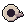 Esparadrapo | Comum | 0,05 | Prende o curativo: ele demora o dobro para sujar (gasta junto ao enfaixar). |
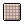 Gaze | Comum | 0,05 | Curativo limpo (melhor que trapo). |
| Kit de primeiros socorros | Incomum | 0,6 | |
| Kit de sutura | Incomum | 0,1 | Agulha e linha: fecha corte profundo e hemorragia (gasta 1 por sutura). |
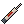 Morfina | Raro | 0,02 | Zera a dor por 2 h, mas deixa lento e com sono. |
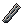 Pinça | Comum | 0,05 | Tira estilhaço sem abrir a ferida. Não se gasta. |
| Pomada para queimadura | Comum | 0,05 | Trata queimadura (depois enfaixe). |
| Soro fisiológico | Comum | 0,3 | Limpa a ferida (melhor que álcool, não arde). |
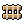 Tala | Comum | 0,6 | Imobiliza fratura (crie com 1 tábua e 2 trapos). |
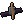 Torniquete | Incomum | 0,1 | Para a hemorragia. Não deixe mais de 2 h sem suturar. |
| Álcool 70% | Comum | 0,5 |
Comida e bebida (26)
| Item | Raridade | Peso | kcal | ml | Validade (dias) |
|---|---|---|---|---|---|
| Comum | 0,4 | 600 | — | 2 | |
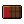 Barra de chocolate | Incomum | 0,1 | 500 | — | — |
| Comum | 0,3 | 20 | 250 | 1 | |
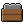 Caixa de enlatados | Raro | 3 | 2400 | 600 | — |
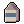 Caixa de leite | Comum | 1 | 600 | 900 | 4 |
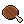 Carne assada | Incomum | 0,4 | 980 | — | 2 |
| Carne fresca | Incomum | 0,5 | 700 | — | 1 |
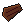 Carne seca (charque) | Incomum | 0,25 | 650 | — | 60 |
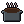 Feijão quente | Comum | 0,4 | 420 | — | 2 |
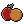 Frutas | Comum | 0,5 | 250 | 150 | 5 |
| Comum | 0,5 | — | 500 | — | |
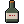 Garrafa de cachaça | Incomum | 0,8 | — | — | — |
| Comum | 0,45 | 300 | — | — | |
| Comum | 0,5 | 350 | 300 | 3 | |
| Comum | 0,4 | 250 | 100 | 4 | |
| Comum | 0,6 | 300 | 150 | 90 | |
| Maço de cigarros | Comum | 0,05 | — | — | — |
| Comum | 1 | — | — | — | |
| Pacote de bolacha | Comum | 0,2 | 900 | — | — |
| Comum | 1 | — | — | — | |
| Pão | Comum | 0,3 | 400 | — | 3 |
| Comum | 0,4 | 800 | — | 4 | |
| Incomum | 0,5 | 10 | 200 | — | |
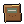 Ração de combate | Incomum | 0,6 | 1200 | 150 | — |
| Comum | 0,6 | 550 | 400 | 2 | |
| Comum | 0,5 | — | 500 | — |
Materiais (23)
| Item | Raridade | Peso | Nota |
|---|---|---|---|
| Incomum | 0,8 | ||
| Cartucho calibre 12 | Incomum | 0,01 | |
| Cartucho vazio | Comum | 0,01 | Recarregue na bancada com pólvora. |
| Raro | 4 | ||
| Incomum | 0,5 | ||
| Comum | 0,2 | ||
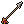 Flecha | Comum | 0,03 | |
| Comum | 0,3 | Jogue no mapa: o vidro quebrando atrai zumbis (30 m) | |
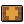 Kit de expansão da base | Raro | 2 | Usar: +10 m² no limite da sua base. |
| Raro | 1,2 | Lona grossa de obra. Com canos e corda vira barraca (bancada). | |
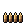 Munição .22 | Incomum | 0 | |
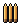 Munição .308 | Raro | 0,03 | |
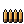 Munição .38 | Incomum | 0,01 | |
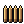 Munição 5,56 | Raro | 0,01 | |
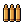 Munição 9mm | Incomum | 0,01 | |
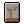 Pacote de sementes | Comum | 0,05 | Plante na horta da base |
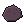 Pedra | Comum | 0,4 | Jogue no mapa: faz barulho e atrai zumbis por perto (18 m) |
| Comum | 0,5 | ||
| Pólvora | Incomum | 0,2 | Dá para tirar de rojões. Recarrega 4 cartuchos. |
| Saco de cimento | Incomum | 5 | |
| Selo | Incomum | 0 | A moeda do correio: compra e vende na caixa de correio. |
| Comum | 0,1 | ||
| Comum | 3 |
Ferramentas (54)
| Item | Raridade | Peso | Nota |
|---|---|---|---|
| Comum | 0,05 | Costura roupa rasgada (gasta 1 trapo). | |
| Almanaque da horta | Incomum | 0,4 | +50% de experiência em agricultura por 1 dia. |
| Lendário | 5,5 | Usar: monta um acampamento onde você está (1 min parado, sem zumbi perto). Dele você vai ao depósito do rádio | |
| Binóculo | Comum | 0,6 | Parado, olha longe: revela ruas, lugares e zumbis num cone de uns 300 m. Andar guarda o binóculo. |
| Raro | 0,02 | Abre a porta-cofre do último andar do bunker em 5 s, sem barulho. Vale até o fim do mês. | |
| Comum | 0,02 | Abre a farmácia do pronto-socorro. | |
| Chave do arsenal | Comum | 0,02 | Abre o arsenal da delegacia. |
| Conjunto: Andarilha | Raro | 1,2 | Roupa lendária. Guarde no armário do depósito do rádio para poder vestir. |
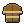 Conjunto: Bombeiro | Raro | 1,2 | Uniforme raro, tirado de um zumbi. Guarde no armário do depósito do rádio para poder vestir. |
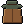 Conjunto: Caçador | Raro | 1,2 | Roupa rara. Guarde no armário do depósito do rádio para poder vestir. |
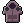 Conjunto: Estudante | Raro | 1,2 | Roupa comum. Guarde no armário do depósito do rádio para poder vestir. |
| Conjunto: Funcionário de mercado | Raro | 1,2 | Uniforme comum, tirado de um zumbi. Guarde no armário do depósito do rádio para poder vestir. |
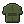 Conjunto: Militar | Raro | 1,2 | Uniforme lendário, tirado de um zumbi. Guarde no armário do depósito do rádio para poder vestir. |
| Conjunto: Mochileiro | Raro | 1,2 | Uniforme incomum, tirado de um zumbi. Guarde no armário do depósito do rádio para poder vestir. |
| Conjunto: Motoqueiro | Raro | 1,2 | Roupa rara. Guarde no armário do depósito do rádio para poder vestir. |
| Conjunto: Médico | Raro | 1,2 | Uniforme incomum, tirado de um zumbi. Guarde no armário do depósito do rádio para poder vestir. |
| Conjunto: Operário | Raro | 1,2 | Roupa incomum. Guarde no armário do depósito do rádio para poder vestir. |
| Conjunto: Paramédica | Raro | 1,2 | Roupa incomum. Guarde no armário do depósito do rádio para poder vestir. |
| Conjunto: Peão de obra | Raro | 1,2 | Uniforme incomum, tirado de um zumbi. Guarde no armário do depósito do rádio para poder vestir. |
| Conjunto: Policial | Raro | 1,2 | Uniforme raro, tirado de um zumbi. Guarde no armário do depósito do rádio para poder vestir. |
| Conjunto: Policial à paisana | Raro | 1,2 | Roupa rara. Guarde no armário do depósito do rádio para poder vestir. |
| Conjunto: Presidiário | Raro | 1,2 | Uniforme incomum, tirado de um zumbi. Guarde no armário do depósito do rádio para poder vestir. |
| Conjunto: Segurança | Raro | 1,2 | Uniforme incomum, tirado de um zumbi. Guarde no armário do depósito do rádio para poder vestir. |
| Coquetel molotov | Incomum | 0,9 | Na tela de ação: põe fogo no chão por 9 s. Não pise nele. |
| Despertador | Comum | 0,3 | Jogue e ele toca: os zumbis vão ver o que é. |
| Galão de biodiesel | Incomum | 4 | Liga o gerador do subsolo do bunker: o andar acende, mas o motor chama os zumbis. |
| Galão de gasolina | Incomum | 4 | |
| Gerador portátil | Raro | 12 | |
| Isqueiro | Comum | 0,05 | |
| Comum | 0,3 | ||
| Incomum | 0,5 | +50% de experiência em carpintaria por 1 dia. | |
| Incomum | 0,4 | Ler: +50% de experiência em primeiros socorros por 1 dia real. | |
| Manual de mecânica | Incomum | 0,5 | +50% de experiência em mecânica por 1 dia. |
| Mapa da cidade | Incomum | 0,1 | Ler o mapa marca as ruas a até 1,5 km de onde você está (gasta o mapa). |
| Memória: A voz do corvo | Lendário | 0,3 | Um caderno de pauta da rádio, com a letra da Rosa. Pôr na estante: a memória fica no depósito do rádio para jo |
| Lendário | 0,3 | O diário de guarda do bunker, com o nome Nunes. Pôr na estante: a memória fica no depósito do rádio para jogar | |
| Memória: O corvo | Lendário | 0,2 | Um livro velho de poemas, com uma pena preta marcando "O Corvo". Pôr na estante: a memória fica no d |
| Memória: O plantão | Lendário | 0,3 | Uma agenda de plantão com o nome Lúcia na capa. Pôr na estante: a memória fica no depósito do rádio para jogar |
| Lendário | 0,3 | O livro de ocorrências da delegacia, última folha escrita à mão. Pôr na estante: a memória fica no depósito do | |
| Memória: Seu Jorge | Lendário | 0,3 | Um caderno de capa marrom, letra de porteiro. Pôr na estante: a memória fica no depósito do rádio para jogar ( |
| Pilhas | Comum | 0,1 | |
| Comum | 0,2 | +50% de experiência em costura por 1 dia. | |
| Revista de tiro | Incomum | 0,3 | +50% de experiência em armas de fogo e brancas por 1 dia. |
| Comum | 0,2 | Ler tira o tédio e anima um pouco | |
| Rojão | Incomum | 0,3 | Estoura longe: atordoa quem estiver perto e chama todo mundo para lá. |
| Rádio | Raro | 0,8 | Ouve a Rádio Corvo: aviso da horda, caixas de suprimento e pistas. |
| Rádio de posto avançado | Raro | 1,5 | Usar onde você está: monta um posto avançado (até 20 km da base). Do posto você vai para a base. |
| Saco de dormir | Raro | 1,5 | Na mochila: encerrar fora da base e dos postos rende um descanso melhor que no chão. |
| Silenciador improvisado | Incomum | 0,3 | Na mochila, abafa 6 tiros da pistola (só quem está perto ouve). Depois se desfaz. |
| Sinalizador de resgate (difícil) | Lendário | 0,4 | Usar: acende o sinal. 5 ondas (150) com militares, bombeiros e um brutamontes. A caixa traz arma de topo. |
| Sinalizador de resgate (fácil) | Raro | 0,4 | Usar: acende o sinal. 3 ondas de zumbis (36); vencendo todas, cai uma caixa de resgate. |
| Sinalizador de resgate (médio) | Raro | 0,4 | Usar: acende o sinal. 4 ondas (84), com presidiários e policiais. A caixa traz uma arma rara. |
| Soda cáustica | Incomum | 0,5 | Para fazer biodiesel no fogo da base. Queima a pele: não é comida. |
| Óleo de cozinha | Comum | 0,9 | Para fazer biodiesel no fogo da base (com álcool e soda cáustica). |
Roupas e equipamento (43)
| Item | Raridade | Peso | Lugar no corpo | Carga |
|---|---|---|---|---|
| Bolsa de academia | Comum | 0,4 | mochila | mochila 5 kg |
| Bolsa de braço | Incomum | 0,15 | bolsa_braco | +0,5 kg |
| Bolsa tática de canela | Incomum | 0,2 | bolsa_perna | +0,8 kg |
| Bolsa tática de coxa | Incomum | 0,3 | bolsa_perna | +1,5 kg |
| Boné | Comum | 0,1 | cabeca | — |
| Botas | Comum | 1,2 | pes | — |
| Calça cargo | Incomum | 0,9 | calca | +3 kg |
| Calça de moletom | Comum | 0,5 | calca | +0,5 kg |
| Calça jeans | Comum | 0,8 | calca | +1 kg |
| Calça tática | Raro | 1 | calca | +3 kg |
| Caneleiras | Incomum | 0,6 | pernas | — |
| Capa de chuva | Comum | 0,4 | tronco | — |
| Capacete balístico | Raro | 1,6 | cabeca | — |
| Capacete de bombeiro | Incomum | 1,1 | cabeca | — |
| Capacete de choque | Raro | 1,4 | cabeca | — |
| Capacete de ciclista | Comum | 0,3 | cabeca | — |
| Capacete de mineiro | Incomum | 0,6 | cabeca | — |
| Capacete de moto | Raro | 1,2 | cabeca | — |
| Capacete de motocross | Incomum | 1,1 | cabeca | — |
| Capacete de obra | Comum | 0,5 | cabeca | — |
| Capacete tático com lanterna | Raro | 1,4 | cabeca | — |
| Casaco grosso | Incomum | 1,4 | tronco | +1 kg |
| Colete balístico | Raro | 3 | colete | +1 kg |
| Colete multibolsos | Incomum | 0,6 | colete | +4 kg |
| Colete tático | Raro | 2,4 | colete | +3 kg |
| Corta-vento | Comum | 0,4 | tronco | +1,5 kg |
| Cotoveleiras | Incomum | 0,4 | bracos | — |
| Coturno | Incomum | 1,5 | pes | — |
| Gorro | Comum | 0,1 | cabeca | — |
| Jaqueta com bolsos | Incomum | 1,2 | tronco | +2 kg |
| Jaqueta de couro | Incomum | 1,5 | tronco | +1 kg |
| Joelheiras | Comum | 0,4 | pernas | — |
| Lanterna de cabeça | Incomum | 0,15 | cabeca | — |
| Luvas de trabalho | Comum | 0,2 | maos | — |
| Luvas táticas | Incomum | 0,25 | maos | — |
| Mochila cargueira | Raro | 2 | mochila | mochila 16 kg |
| Mochila de caminhada | Raro | 0,8 | mochila | mochila 10 kg |
| Mochila escolar | Comum | 0,5 | mochila | mochila 6 kg |
| Mochila tática | Raro | 1,2 | mochila | mochila 12 kg |
| Moletom escuro | Comum | 0,7 | tronco | +0,5 kg |
| Pochete | Comum | 0,2 | pochete | +1,5 kg |
| Protetor de antebraço | Raro | 0,7 | bracos | — |
| Tênis de corrida | Comum | 0,6 | pes | — |